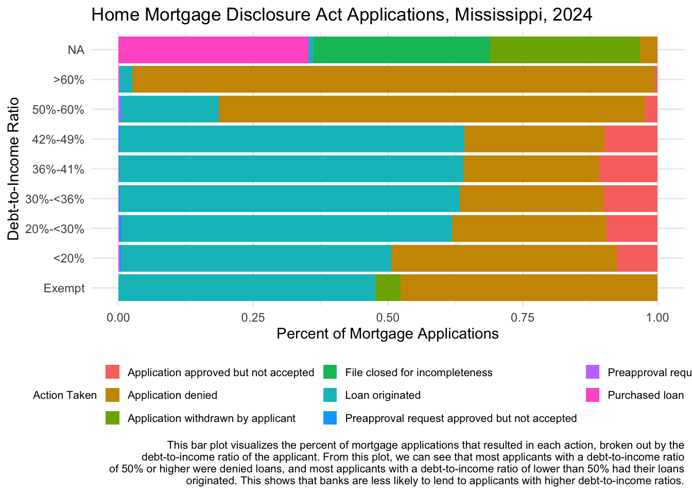
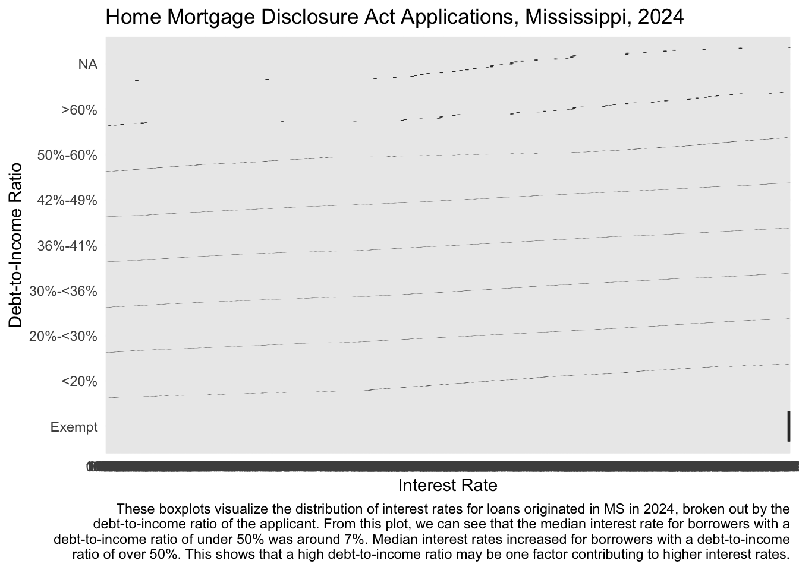

library(tidyverse)
library(RColorBrewer)
hmda_ms_2024 <- read.csv("https://ffiec.cfpb.gov/v2/data-browser-api/view/csv?states=MS&years=2024") |>
filter(loan_type == 1 &
lien_status == 1 &
conforming_loan_limit == 'C' &
derived_dwelling_category %in% c("Single Family (1-4 Units):Site-Built",
"Single Family (1-4 Units):Manufactured") &
business_or_commercial_purpose == 2 &
loan_purpose %in% c(1, 2)) |>
select(lei,
county_code,
derived_ethnicity,
derived_race,
derived_sex,
action_taken,
loan_purpose,
loan_amount,
interest_rate,
property_value,
loan_to_value_ratio,
denial_reason.1,
denial_reason.2,
denial_reason.3,
denial_reason.4,
income,
debt_to_income_ratio) |>
mutate(loan_purpose = recode(loan_purpose,
"1" = "Home Purchase",
"2" = "Home improvement",
.default = NA_character_)) |>
mutate(action_taken = recode(action_taken,
"1" = "Loan originated",
"2" = "Application approved but not accepted",
"3" = "Application denied",
"4" = "Application withdrawn by applicant",
"5" = "File closed for incompleteness",
"6" = "Purchased loan",
"7" = "Preapproval request denied",
"8" = "Preapproval request approved but not accepted",
.default = NA_character_)) |>
mutate(denial_reason.1 = recode(denial_reason.1,
"1" = "Debt-to-income ratio",
"2" = "Employment history",
"3" = "Credit history",
"4" = "Collateral",
"5" = "Insufficient cash (downpayment, closing costs)",
"6" = "Unverifiable information",
"7" = "Credit application incomplete",
"8" = "Mortgage insurance denied",
"9" = "Other",
"10" = "Not applicable",
.default = NA_character_)) |>
rowwise() |>
mutate(denial_reason = case_when(any(!is.na(c_across(c(denial_reason.2,
denial_reason.3,
denial_reason.4)))) ~ "Multiple",
TRUE ~ denial_reason.1)) |>
ungroup() |>
mutate(loan_to_value_ratio = as.numeric(loan_to_value_ratio),
property_value = as.numeric(property_value)) |>
mutate(debt_to_income_ratio = case_when(debt_to_income_ratio %in% c("36", "37", "38","39","40","41") ~ "36%-41%",
debt_to_income_ratio %in% c("42","43","44","45","46","47","48","49") ~ "42%-49%",
TRUE ~ debt_to_income_ratio)) |>
mutate(debt_to_income_ratio = factor(debt_to_income_ratio, levels = c("Exempt",
"<20%",
"20%-<30%",
"30%-<36%",
"36%-41%",
"42%-49%",
"50%-60%",
">60%"))) |>
select(-c(denial_reason.1,
denial_reason.2,
denial_reason.3,
denial_reason.4))Lab 3: Plotting Frequencies and Distributions
Introduction
Learning Goals
- Read the
ggplotcheatsheets - Produce and interpret univariate plots
- Produce and interpret multivariate plots
- Summarize and interpret variation and co-variation from observation of plots
- Contextualize plots with descriptive labels and titles
Review of Key Terms
- Multivariate Plots
-
Plots that summarize and visualize the distribution and relationship between multiple variables
- Univariate Plots
-
Plots that summarize and visualize the distribution of a single variable
- Variation
-
The degree to which categorical or numeric values vary across data
Home Mortgage Disclosure Act (HMDA)
In the United States, homeownership can offer a pathway to promoting stability and social mobility. However, historically, opportunities for purchasing a home have been unequally distributed along racial and ethnic lines. In a practice known as redlining, some banks in the mid-twentieth century would make decisions about who would be approved for loans based on the perceived “riskiness” of the neighborhoods they lived in; risk was often determined by the racial makeup of the neighborhood. This discrimination in lending enforced the racial segregation of communities and made it much more difficult for Black and other minority individuals to secure access to a financial asset that could be passed down in their families. With limited access to this opportunity for securing generational wealth, we still feel the affects of redlining today - even though racially-motivated redlining was prohibited by the Fair Housing Act in 1968.
In order to monitor for fair lending practices, in 1975, the Home Mortgage Disclosure Act was passed, requiring lending institutions to publicly disclose data about their lending - reporting each loan application they receive, whether the loan was approved or denied, and demographic information on the borrowers. This data is currently published annually by the Consumer Federal Protection Bureau, and a number of organizations monitor it to determine if there are continued forms of racial discrimination in who has access to home loans.
In this lab, we are going to examine Home Mortgage Disclosure Act data from 2024 in Mississippi. Recently, a study by Lending Tree showed that Black homebuyers in Mississippi face some of the highest loan denial rates in the country:
Each row in this dataset is one mortgage application, and variables describing the demographics of the applicant, details about the loan, and whether or not the loan was approved are included in the data. When denied, the reasons for denial are also included. For consistency in comparisons, I’ve filtered this dataset down to only include 30-year conventional, first-lien, single-family, non-commercial loans that are either for a home purchase or a home improvement. The data documentation for this dataset is quite thick, so I will provide you with a data dictionary for today.
| VARIABLE NAME | DESCRIPTION |
|---|---|
| derived_ethnicity | Single aggregated ethnicity categorization derived from applicant/borrower and co-applicant/co-borrower ethnicity fields |
| derived_race | Single aggregated race categorization derived from applicant/borrower and co-applicant/co-borrower race fields |
| derived_sex | Single aggregated sex categorization derived from applicant/borrower and co-applicant/co-borrower sex fields |
| action_taken | The action taken on the covered loan or application |
| loan_purpose | The purpose of covered loan or application |
| loan_amount | The amount of the covered loan, or the amount applied for |
| loan_to_value_ratio | The ratio of the total amount of debt secured by the property to the value of the property relied on in making the credit decision |
| income | The gross annual income, in thousands of dollars, relied on in making the credit decision, or if a credit decision was not made, the gross annual income relied on in processing the application |
| debt_to_income_ratio | The ratio, as a percentage, of the applicant’s or borrower’s total monthly debt to the total monthly income relied on in making the credit decision |
| tract_minority_population_percent | Percentage of minority population to total population for tract, rounded to two decimal places |
| denial_reason | The principal reason, or reasons, for denial |
Setting Up Your Environment
- Run the code below to the import the 2024 Home Mortgage Disclosure Act data for Mississippi into
R. It may take a few moments to load. Call me or one of the data assistants over if you get an error.
We’re going to start our analysis with univariate plotting. Specifically, we are going to produce data visualizations that count the number of observations in a dataset that fall into specific groupings. When grouping observations by a categorical variable, we will produce a bar plot. Remember when labeling that these plots visualize frequency. They use the height aesthetic to visualize us how many rows in a variable have a certain value.
Let’s start by comparing how many home loans were for home purchases vs. the number for home improvements.
Question
In the code below, create a bar plot that visualizes how many home loans were for home purchases vs. the number for home improvements. Determine the variable that should appear on the x-axis, along with the geom function that can be used to create a bar plot. Fill in the blanks to ensure your plot has the appropriate context.
hmda_ms_2024 |>
ggplot(aes(x = _____)) +
_____() +
labs(title = "Home Mortgage Disclosure Act Applications, [FILL GEOGRAPHY], [FILL YEAR]",
x = "[FILL X-AXIS VARIABLE]",
y = "Count of [FILL WHAT's BEING COUNTED?]") +
theme_minimal()Now let’s look at the number of applicants of each race.
Question
Create a plot below that counts the number of applicants of each race. Be sure to give it a descriptive title and labels covering all 5 essential components of data context. You can use the code you wrote above as a template to get you started. You’ll probably notice that the labels of your plot overlap. You can add + coord_flip() to the end of your code to flip the plot so that the bars are horizontal rather than vertical. This should help with legibility.
# Create plot hereIn the last plot, we visualized the frequency of a categorical variable. When grouping observations into intervals of a numeric variable, we will produce a histogram. For instance, let’s say we want to know the distribution of loan amounts that applicants requested in Mississippi in 2024. With a histogram, I can visualize how many loan applications requested $0-$100000, >$100000-$200000, and so on. Histograms use the height aesthetic to visualize how many rows in a variable fall into each of these numeric bins.
Question
In the code below, create a histogram that visualizes the distribution of loan amounts. Determine the variable that should appear on the x-axis, along with the geom function that can be used to create a histogram. Set the binwidth to create numeric intervals of 100000. Fill in the blanks to ensure your plot has the appropriate context.
hmda_ms_2024 |>
ggplot(aes(x = _____)) +
_____(binwidth = _____) +
labs(title = "Home Mortgage Disclosure Act Applications, [FILL GEOGRAPHY], [FILL YEAR]",
x = "[FILL X-AXIS VARIABLE]",
y = "Count of [FILL WHAT's BEING COUNTED?]",
caption = str_wrap("This histogram displays the distribution of home loan amounts requested by Mississippi applicants in 2024. The plot shows that the majority of applicants requested loans under $250,000. Since the average home loan size in the U.S. in 2024 was $252,505, this indicates that average requested home loan sizes in MS were smaller in comparison to the country as a whole.", 120)) +
theme_minimal()
Tip
A good plot caption does three things. First, it describes what the plot is and the variables displayed on it. Second, it articulates at least one fact from the plot. Third, it interprets the significance of that fact. The caption that I provided for the last plot follows this template:
(describe) This histogram displays the distribution of home loan amounts requested by Mississippi applicants in 2024. (articulate fact) The plot shows that the majority of applicants requested loans under $250,000. (interpret significance) Since the average home loan size in the U.S. in 2024 was $252,505, this indicates that average requested home loan sizes in MS were smaller in comparison to the country as a whole.
Loan to value ratio is a measure that indicates the percentage of a property’s value that a borrower requests of a lending institution. So let’s say I want to buy a property with a value of $100,000; I plan to put down $20,000, and I request a loan for $80,000. The loan to value ratio would be 80. Typically, when borrowers can put more down, it is considered a less risky loan.
Question
Create a plot below that shows the distribution of loan to value ratios (in intervals of 10). Be sure to give it a descriptive title and labels covering all 5 essential components of data context. Also add a caption to describe the percentage of a loan’s property that borrowers most often request when applying for a loan.
You can use the code you wrote above as a template to get you started. Note that there were 20 outlier loans where borrowers requested more than double property’s value. There was even one loan where the applicant requested 14 times the property’s value. All of these loans were denied. Below I’ve given you some code to filter out these outliers in order to make the plot more legible.
hmda_ms_2024 |>
filter(loan_to_value_ratio < 200) |>
# Fill remaining lines hereLet’s move on to some multivariate plotting. Remember that we can add further variables to a plot via a number of different aesthetics (e.g. color: fill= or col=; size: size=; position: x= or y=, small multiples: + facet_wrap(vars(...)) ). Whenever we add further data to a plot, we should be on the lookout for overplotting.
Question
Create a stacked barplot below that counts both the race of the applicants and the action taken in regards to the loan. Be sure to give it a descriptive title and labels covering all 5 essential components of data context. I’ve given you some code below to move the legend to the bottom of the plot, to reduce the legend size, and to set the number of rows that appear in the legend.
hmda_ms_2024 |>
# Fill remaining lines here
coord_flip() +
theme(legend.position = "bottom",
legend.text = element_text(size = 6),
legend.title = element_text(size = 8),
legend.key.size = unit(0.4, "cm")) +
guides(fill=guide_legend(nrow=4))We learned earlier in this lab that there were more white applicants than applicants of other races applying for loans in Mississippi in 2024. If we only look at counts of approvals or denials then we don’t know if differences in approval numbers are due to disparities in who is getting loans or due to there just being more applicants of a particular race. For this reason, we are more interested in the percentage of approvals for each race and the percentage of denials for each race. This is more comparable across races than counts.
Question
Copy the plot that you created above into the code chunk below, and then adjust the position of the bars to “fill” in order to normalize their height. Add a caption that summarizes your findings.
# Create plot hereNow let’s move on to comparing how requested loan amounts differ across race. To do so, we are going to create a boxplot that compares summary statistics (i.e. minimum, maximum, median, 1st quartile, 3rd quartile, and outliers) of the loan amounts requested by applicants of each race.
Question
Fill in the code below to create a boxplot that visualizes how the distributions of requested loan amounts differed across race. Add a caption that summarizes your findings.
hmda_ms_2024 |>
ggplot(aes(x = derived_race, __________)) +
__________ +
coord_flip() +
labs(title = "Home Mortgage Disclosure Act Applications, Mississippi, 2024",
x = "Race of Applicant",
y = _________,
caption = _________) +
theme_minimal() In the past several exercises, we have been creating plots that count the number of rows in a variable have a certain value. …but what if our dataset presents aggregated data - where those counts have already been given to us? For instance, I wrote some code below to create a dataset where the counts of individuals of each race that were denied loans is already calculated, along with the percentage of individuals that were denied loans. I also created a dataset where the counts of individuals of each race and sex that were denied loans is already calculated, along with the percentage. You’ll learn more about these functions in a few weeks. Take a look at these datasets below, and consider how they compare them to the data that we started with.
hmda_denial_by_race <-
hmda_ms_2024 |>
group_by(derived_race) |>
summarize(total_denied = sum(action_taken == "Application denied"),
percent_denied = sum(action_taken == "Application denied")/n())
hmda_denial_by_race_sex <-
hmda_ms_2024 |>
filter(derived_race != "Free Form Text Only") |> #There were only 3 denials with free form text for race in MS in 2024, and they have been removed here for plot legibility
group_by(derived_race, derived_sex) |>
summarize(total_denied = sum(action_taken == "Application denied"),
percent_denied = sum(action_taken == "Application denied")/n())
hmda_denial_by_racehmda_denial_by_race_sexWhen counts have already been calculated for us, we need to use a different type of plot to visualize these counts. We don’t need the plot function to count the rows with each value; we just need it to set the height of the bar to a numeric value provided in our dataset. We will create column plots below to do this.
Question
In the code below, fill in the blanks to set the height of each bar to the percent of individuals in a particular race whose mortgage was denied. Select a geom function to create a column chart. Be sure to fill in the correct labels.
hmda_denial_by_race |>
ggplot(aes(x = derived_race, _______)) +
_______ +
labs(title = "Home Mortgage Disclosure Act Applications, Mississippi, 2024",
x = "Race of Applicant",
y = "___________",
caption = str_wrap("This column plot visualizes the denial rates of home mortgage applications in MS in 2024. The plot shows that Black or African American applicants, American Indian or Alaska Native applicants, or applicants of 2 or more minority races were all denied mortgage at double the rate of White applicants. This may indicate disparities in lending practices.", 120)) +
theme_minimal() +
coord_flip()While this gives us some insight into disparities in lending practices, we can’t see how multiple aspects of a person’s identity might factor in to these distinctions. The concept of intersectionality - introduced by civil rights scholar Kimberle Crenshaw in the late 1980s - considers how people of certain overlapping social identities may face unique forms of discrimination. Let’s take a look at how this data changes when we also consider sex in relation to denial rates.
Question
Copy your code above, replacing the hmda_denial_by_race data frame with hmda_denial_by_race_sex. Using the fill aesthetic, add the variable for describing the applicants’ sex to the plot. Set the position of the columns to "dodge", and be sure to add a label for the fill aesthetic. Adjust the caption to summarize your findings.
# Create plot hereIn reviewing data like this, some banks have explained the disparities by suggesting that certain groups of applicants are more likely to have lower credit scores, less cash for down payments, or more debt in relation to their income. Let’s take a look at the reasons that Mississippi banks denied mortgage loans in 2024.
Question
Create a plot below that visualizes how many applicants of each race were denied mortgages for each denial reason. Be sure to give it a descriptive title and labels covering all 5 essential components of data context. You may wish to borrow some of your previous code to adjust the plot for legibility. I’ve given you some code below to filter the data frame to just those mortgage applications that were denied.
hmda_ms_2024 |>
filter(action_taken == "Application denied") |>
#Fill remaining lines hereFrom this plot, you should learn that the top three reasons for denials were: 1) Multiple (meaning some combination of other denial reasons), 2) Credit history, and 3) Debt-to-income ratio. This dataset does not release information about applicants’ credit histories. However, we can take a look at the outcomes of applications from applicants with different debt-to-income ratios compared across races.
Debt-to-income ratio refers to how much debt a person has in relation to the money they earn in income. A high debt-to-income ratio indicates that someone may not be pulling in enough income to pay off their debts, while a low debt-to-income ratio indicates that their income can reasonably help them pay off their debts. Banks are often hesitant to lend to individuals with high debt-to-income ratios.
Question
Below I’ve given you some code to produce a plot that visualizes the percent of mortgage applications that resulted in each action (e.g. loan originated, denied, etc.), broken out by the debt-to-income ratio of the applicant. Referring to last week’s lab, add a line to this code to facet this plot by race. For which races was the denial rate higher for applicants with a lower than 50% debt-to-income ratio? Adjust the fact and interpretation presented in the caption with your response.
hmda_ms_2024 |>
ggplot(aes(x = debt_to_income_ratio, fill = action_taken)) +
geom_bar(position = "fill") +
coord_flip() +
#Add line to facet here
labs(title = "Home Mortgage Disclosure Act Applications, Mississippi, 2024",
x = "Debt-to-Income Ratio",
y = "Percent of Mortgage Applications",
fill = "Action Taken",
caption = str_wrap("This bar plot visualizes the percent of mortgage applications that resulted in each action, broken out by the debt-to-income ratio of the applicant. From this plot, we can see that most applicants with a debt-to-income ratio of 50% or higher were denied loans, and most applicants with a debt-to-income ratio of lower than 50% had their loans originated. This shows that banks are less likely to lend to applicants with higher debt-to-income ratios.",width = 120)) +
theme_minimal() +
theme(legend.position = "bottom",
legend.text = element_text(size = 8),
legend.title = element_text(size = 8),
legend.key.size = unit(0.4, "cm"),
plot.caption = element_text(size = 8)) +
guides(fill=guide_legend(nrow = 3))
Finally, let’s take a look at differences in what borrowers owe when their mortgages are approved. A number of factors influence the interest rates that borrowers pay on their loans (including credit history, income, debt-to-income ratio, and loan term). Higher debt-to-income ratios often result in higher interest rates.
Question
Below I’ve given you some code to produce a plot that visualizes how the distributions of interest rates differed across debt-to-income ratios when loans were approved. Referring to last week’s lab, add a line to this code to facet this plot by race. For which races were the interest rates higher even with lower debt-to-income ratios? Adjust the fact and interpretation presented in the caption with your response.
hmda_ms_2024 |>
filter(action_taken == "Loan originated") |>
ggplot(aes(x = debt_to_income_ratio, y = interest_rate)) +
geom_boxplot() +
coord_flip() +
labs(title = "Home Mortgage Disclosure Act Applications, Mississippi, 2024",
x = "Debt-to-Income Ratio",
y = "Interest Rate",
caption = str_wrap("These boxplots visualize the distribution of interest rates for loans originated in MS in 2024, broken out by the debt-to-income ratio of the applicant. From this plot, we can see that the median interest rate for borrowers with a debt-to-income ratio of under 50% was around 7%. Median interest rates increased for borrowers with a debt-to-income ratio of over 50%. This shows that a high debt-to-income ratio may be one factor contributing to higher interest rates.",width = 120)) +
theme_minimal() 
Ethical Considerations
This dataset makes loan-level data about individual sensitive financial information available to the public. To reduce the risk that borrowers may be identified in the data, the CFPB removes certain variables before publication, such as the loan’s unique identifier, the property address, the applicant’s credit score, and any free-form text that the applicant writes on the application. Applicants do not have the option to opt-out of their data being disclosed in this dataset. If it were possible to re-identify individual applicants in this dataset, what would be the risks to the public disclosure of their information? Which applicants would be the most vulnerable? How should we think about the balance between the social value of this public data disclosure and the possible risks to those represented in it? Share your ideas on our sds-192-discussions Slack channel.